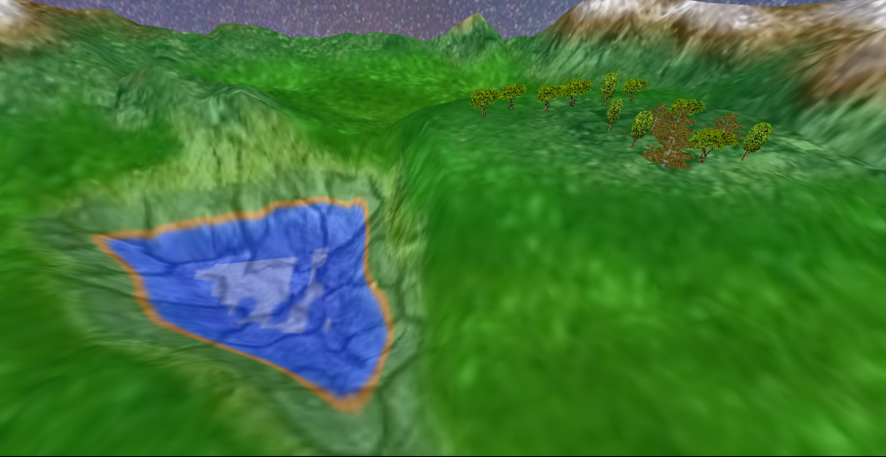
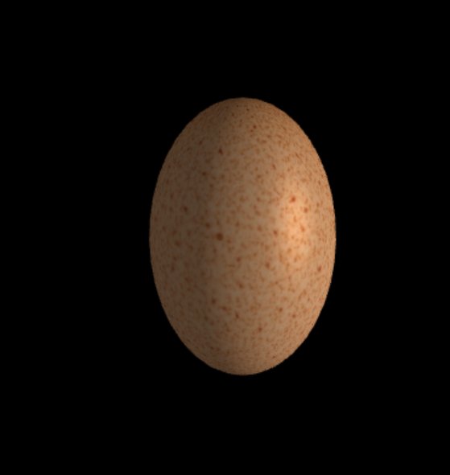

class: center, middle # Aplicações de Computação Gráfica ## Semana Profissão Engenheiro 2024 ??? Notes for the _first_ slide! --- class: center, middle # Quem somos? <table style="margin-left: auto; margin-right: auto;"> <thead> <tr> <th style="text-align: center;">Henrique Silva</th> <th style="text-align: center;">Tiago Branquinho</th> </tr> </thead> <tbody> <tr> <td style="text-align: center;"></td> <td style="text-align: center;"></td> </tr> <tr> <td style="text-align: start;">|Data Science, Machine Learning|</td> <td style="text-align: end;">|Mobile and Web Development, AI|</td> </tbody> </table> <br> <div style="font-size: 0.8em;"> Estudantes de Mestrado em Engenharia Informática e Computação @ FEUP<br> </div> --- # Agenda 1. Intrudução à Computação Gráfica 2. WebGL 3. Jogo do Pássaro 4. Demo 5. Jogatana 6. Questões --- # Intrudução à Computação Gráfica - Termo chique que representa o processo de usar computadores para criar e manipular imagens - Por trás das imagens, há uma base sólida de matemática e física, que nos permite simular coisas como movimento, luz e sombra. - A computação gráfica permite-nos transformar ideias em realidade digital, abrindo portas à imaginação. <img src="media/gta6.jpg" alt="GTA VI" style="width: 650px; height: 300px;"> --- # WebGL - Conjunto de materiais que permite criar animações e gráficos interativos, tal como aqueles que vêm em sites e jogos. - O que distingue esta tecnologia é que funciona diretamente no vosso browser. - Em WebGL tudo é feito com triângulos. <div style="text-align: center;"> </div> --- # Jogo do Pássaro - Criar uma esfera - Colocar uma imagem como fundo do nosso mundo - Criar um pássaro (quem diria?) - Criar um terreno com relevo - Adicionar ovos e ninho - Adicionar árvores - Detalhes adicionais  --- # Detalhes <div class="grid-container"> <div class="grid-item">  </div> <div class="grid-item"> </div> </div> --- class: center # Demos <video src="media/demo.mov" alt="bird game" style="width: 100%; height: 100%; margin-bottom: 8em;" autoplay muted loop></video> --- class: center, middle # Vamos Jogar **WASD** para mover **P** para apanhar o ovo **O** para largar o ovo **R** para repor a posição do pássaro **Alt+F4** para começar a voar ## [Carrega Aqui!](../project/)